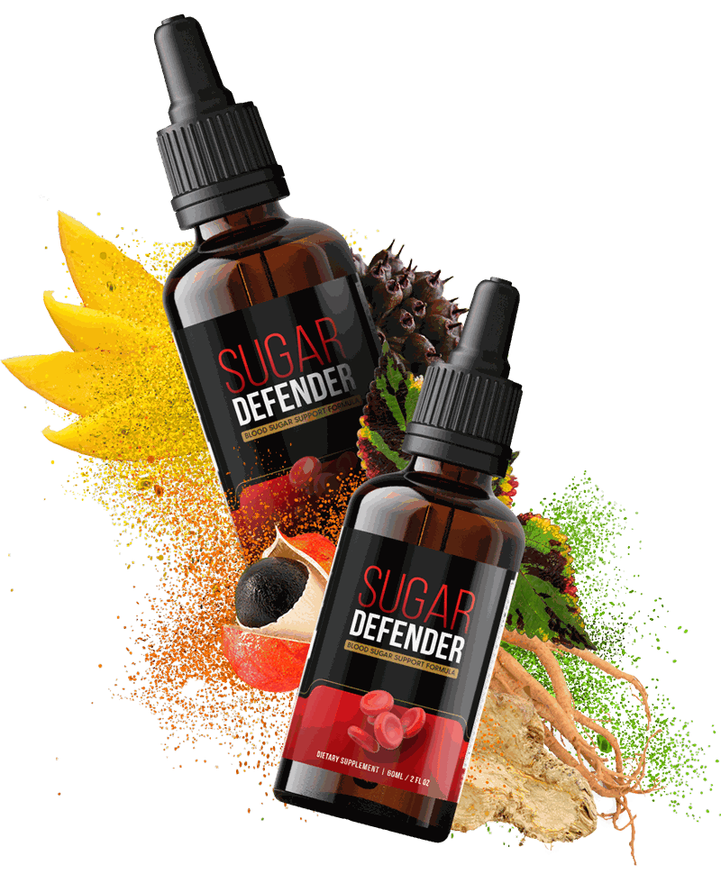
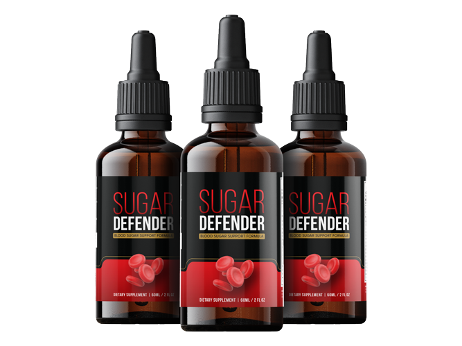
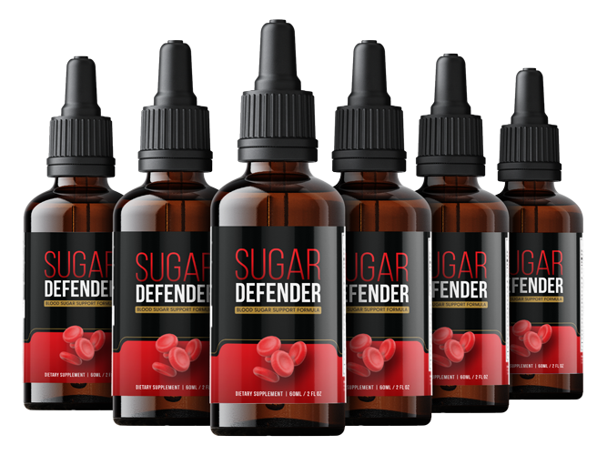

2 BOTTLES
2 Bottles
Listed as a 60-day supply

$69 / bottle
- A simple first order
- Shipping added
- One-time payment, per the seller
- 60-day money-back guarantee
$138 + shipping
Check Price: 2 BottlesSugar Defender is a liquid-drop supplement for adults who want a simple morning habit to support healthy blood sugar levels already in the normal range, steady everyday energy and a balanced metabolism alongside good food and regular movement. Nothing to swallow, just drops under the tongue or in water. This site shows you the ingredients, the medicine and safety notes and the prices plainly, and says clearly that it is not a treatment for diabetes.
| Format | Liquid drops, dropper bottle |
|---|---|
| Seller's directions | Two full droppers in the morning |
| Packs | 2, 3 or 6 bottles, $69 to $49 each |
| Free shipping | On 3 and 6 bottles (US) |
| Made for | Adults 18 and over* |
| Not a | Treatment for diabetes or any disease |
Secure payment · 60-day guarantee

An illustration of the steady-energy theme, not a measurement of anyone's blood sugar.
Every named ingredient is explained with its cautions, the blood sugar medicine notes come first and 60 days gives you time to decide. Start with the ingredients or safety and medicine notes.

As stated by the seller.
No capsules to swallow.

As stated by the seller.
Registration is not approval, and none is claimed.
Read the ingredients and the medicine notes before you decide.

Sugar Defender is a dietary supplement in liquid drop form. The seller says it supports healthy blood sugar levels, steady energy and a balanced metabolism, and suggests two full droppers each morning.* See what Sugar Defender is.
The seller names eight ingredients, eleuthero, coleus, maca root, African mango, guarana, gymnema, ginseng and chromium, and gives no amounts. See the ingredients.
It is not a medicine, it is not a treatment for diabetes and it never replaces monitoring or a doctor's advice.
See Sugar DefenderSugar Defender is offered as two, three or six bottles at $69, $69 and $49 each. The seller lists them as 60, 90 and 180 day supplies, ships the 3 and 6 bottle packs free in the US and covers every order with a 60-day guarantee. The 2 and 3 bottle packs cost the same per bottle, so the 3 bottle pack mainly adds free shipping. See the pricing page, the guarantee and safety and medicine notes.
Listed as a 60-day supply
$138 + shipping
Check Price: 2 BottlesListed as a 180-day supply

$294, free US shipping
Check Price: 6 BottlesListed as a 90-day supply
$207, free US shipping
Check Price: 3 BottlesConfirm the live total, shipping, bonuses and the refund policy at checkout before you pay.
Price per bottle, drawn to scale.
The seller covers every bottle for 60 days from the original purchase date. You can return the product, even empty bottles, within that window for a refund minus shipping and handling, and the seller says refunds are issued within 48 hours of receiving the return. Read the exact terms at checkout. See the refund policy.
Order With the 60-Day GuaranteeThe seller lists free bonus ebooks with its offer. One cover is shown here as supplied, it is general herbal-tea reading and not a medical treatment, and the other cover is not used. Confirm what comes with each pack at checkout, and see pricing.
The Ultimate Tea Remedies
A collection of herbal tea ideas, as listed by the seller.
From $69 a bottle to $49 on six. See pricing.
Blood sugar depends on what and when you eat, how you move, how you sleep, stress, weight, genes and any medicine you take, and no supplement replaces those. Sugar Defender is offered as one small morning step beside them, for adults who would rather use drops than capsules.* See daily habits for steady blood sugar.
The honest limits are worth stating. Eight known ingredients are listed without amounts, the seller's "controls blood glucose" and "fat burning" language is stronger than the evidence, and a "stimulant-free" claim sits beside guarana, so this site promises no glucose result.* See the benefits and how to read a blood sugar supplement label.
Cautions matter most for anyone on diabetes medicine. See blood sugar supplements and diabetes medicine.
Balanced meals with fibre.
A walk after meals.
A regular bedtime.
Keep monitoring as advised.
Tap an ingredient for the short version.*
In short: Also called Siberian ginseng.*
Eleuthero (Eleutherococcus senticosus) is a shrub root used in traditional practice as an adaptogen for stamina and resilience. The seller lists it first and ties it to energy.
In short: Coleus forskohlii, a root used in weight products.*
Coleus forskohlii is a plant root whose compound forskolin is sold for weight management. The seller calls it a fat burning aid.
In short: A Peruvian root, eaten as food.*
Maca is a radish-family root from the Andes, eaten as food and sold as powder or extract. The seller describes it as an energy ingredient.
In short: Irvingia seed extract.*
African mango (Irvingia gabonensis) seed extract is sold for weight and cholesterol. The seller calls it a fat burning agent.
In short: A natural source of caffeine.*
Guarana (Paullinia cupana) seeds are a concentrated natural source of caffeine, and the seller says it stimulates metabolism. This contradicts the seller's own "stimulant-free" claim.
In short: Gymnema sylvestre, a traditional sugar-related herb.*
Gymnema sylvestre is a woody vine used for centuries in traditional Indian medicine and studied for its effect on sugar taste and blood glucose.
In short: A famous root in traditional medicine.*
Panax or American ginseng is a famous root taken for stamina and sometimes studied for blood glucose, and the seller lists it among the glucose ingredients.
In short: A trace mineral linked to insulin.*
Chromium is a trace mineral that plays a part in how the body handles glucose, and it is often sold in blood sugar products. The seller says it "controls" blood glucose, which overstates it.
The seller names eight ingredients and gives no amounts, so there is no way to judge any dose from its page. Three of them can lower blood sugar and one is a source of caffeine, so compare the ingredients page with your own bottle and read safety and medicine notes.
Check the amounts on your own bottle.
Eight named ingredients and 60 days to decide. See pricing and the guarantee.
Please read this before you order.
Healthy adults 18 and over who take no interacting medicine and have no blood sugar condition.*
Anyone with diabetes or prediabetes, anyone on blood sugar, blood pressure or blood thinning medicine, and anyone with a heart condition or caffeine sensitivity.
Anyone under 18, pregnant or nursing without a doctor's advice, or anyone using it instead of prescribed treatment.
The seller suggests two full droppers before breakfast, held under the tongue for 30 seconds, or mixed into water, and says to start with less if you are unsure. Follow the directions on your bottle. See how Sugar Defender works and how to use it.
Amounts and cautions.
Pharmacist first.
Before breakfast.
As advised.*
The seller suggests two full droppers in the morning before breakfast. Choose a cue you already have, and follow your bottle's directions. This planner is a demo and saves nothing. See the daily routine.
I will take my Sugar Defender as my label directs before breakfast.
Tap a day once you have taken it.
Your drops in the morning, then these daily habits for steady blood sugar for the rest.
Your drops, then a protein breakfast.
A balanced lunch and a short walk.
A planned snack, not a sugary one.
A lighter dinner and a regular bedtime.
The seller's areas of support, not verified medical outcomes. Results vary.*
Supports levels already in the normal range.
Supports everyday energy.
Supports everyday metabolism.
Drops in the morning.
Eight listed openly.
Medicine notes up front.
On 3 and 6 bottles.
A 60-day guarantee.
Named, verified-purchase reviews with photos and quoted results cannot be checked from here, so this site shows plain themes and no star ratings.
Sugar Defender is offered as two, three or six bottles at $69, $69 and $49 each. The seller lists them as 60, 90 and 180 day supplies, ships the 3 and 6 bottle packs free in the US and covers every order with a 60-day guarantee. The 2 and 3 bottle packs cost the same per bottle, so the 3 bottle pack mainly adds free shipping. See the pricing page, the guarantee and safety and medicine notes.
Listed as a 60-day supply
$138 + shipping
Check Price: 2 BottlesListed as a 180-day supply
$294, free US shipping
Check Price: 6 BottlesListed as a 90-day supply
$207, free US shipping
Check Price: 3 BottlesConfirm the live total, shipping, bonuses and the refund policy at checkout before you pay.
Price per bottle, drawn to scale.
The seller covers every bottle for 60 days from the original purchase date. You can return the product, even empty bottles, within that window for a refund minus shipping and handling, and the seller says refunds are issued within 48 hours of receiving the return. Read the exact terms at checkout. See the refund policy.
Order With the 60-Day GuaranteeShort reads to go with your decision. Back to the ingredients or the prices.
How drops differ from capsules and sprays.
A traditional herb and its blood sugar cautions.
Mixed trials and who might benefit.
Sugar Defender is a liquid-drop dietary supplement taken under the tongue or in water. The seller says it supports healthy blood sugar levels, steady energy and metabolism.* It is not a medicine and not a treatment for diabetes or any other condition.
The seller names eight: eleuthero, coleus, maca root, African mango, guarana, gymnema, ginseng and chromium, with no amounts. See the ingredients.
The seller suggests two full droppers in the morning before breakfast, held under the tongue for 30 seconds and then swallowed, or mixed into a glass of water. Follow the directions on your bottle. See how Sugar Defender works and how to use it.
The seller says so, but guarana is a natural source of caffeine and the seller itself says guarana "stimulates your metabolism". No caffeine amount is given, so be careful if you are sensitive.
Only with your doctor's agreement. Gymnema, chromium and ginseng can lower blood sugar further, which could cause it to drop too low, and the seller itself says monitoring is important. See safety and medicine notes.
No. It is not intended to diagnose, treat, cure or prevent any disease, including diabetes. It never replaces medicine, monitoring or medical advice.
No result is promised. The seller's fat-burning language is stronger than the evidence for coleus, African mango or guarana, and weight depends mainly on eating, movement and sleep.
Anyone with diabetes or prediabetes, anyone on blood sugar, blood pressure or blood thinning medicine, anyone with a heart condition or caffeine sensitivity, and anyone pregnant, nursing or under 18.
The seller lists 2 bottles as 60 days, 3 as 90 days and 6 as 180 days, which is 30 days a bottle at two droppers a day. Confirm the bottle size on your own label.
The seller lists 2 bottles at $69 each ($138 plus shipping), 3 bottles at $69 each ($207, free US shipping) and 6 bottles at $49 each ($294, free US shipping). See pricing and confirm every total at checkout.
| Named ingredients | Eleuthero, coleus, maca root, African mango, guarana, gymnema, ginseng, chromium |
| Amounts, serving size, other ingredients | On the Supplement Facts panel of your bottle; not given by the seller's page |
| Origin (seller's statement) | Made in the USA in an FDA-registered, GMP-certified facility, using foreign and domestic ingredients |
Built from the supplied bottle photos and the seller's page, not a copy of a Supplement Facts panel. Your own bottle has the last word.
The supplied photos show dark amber dropper bottles with a black cap and a red and gold label reading Sugar Defender. The label text is too small to read reliably, so the details here come from the seller's page.
No Supplement Facts panel was supplied, so amounts, serving size and other ingredients should be read from your own bottle. See the ingredients and the bottle and label page.
Read safety and medicine notes, show the ingredient list to your pharmacist if you take medicine, then see the live price, shipping and refund terms at the secure checkout.
Secure checkout
Public-health sources on blood sugar, supplements and the listed ingredients. None of them tested Sugar Defender itself, and they are not affiliated with it. See also the ingredients.